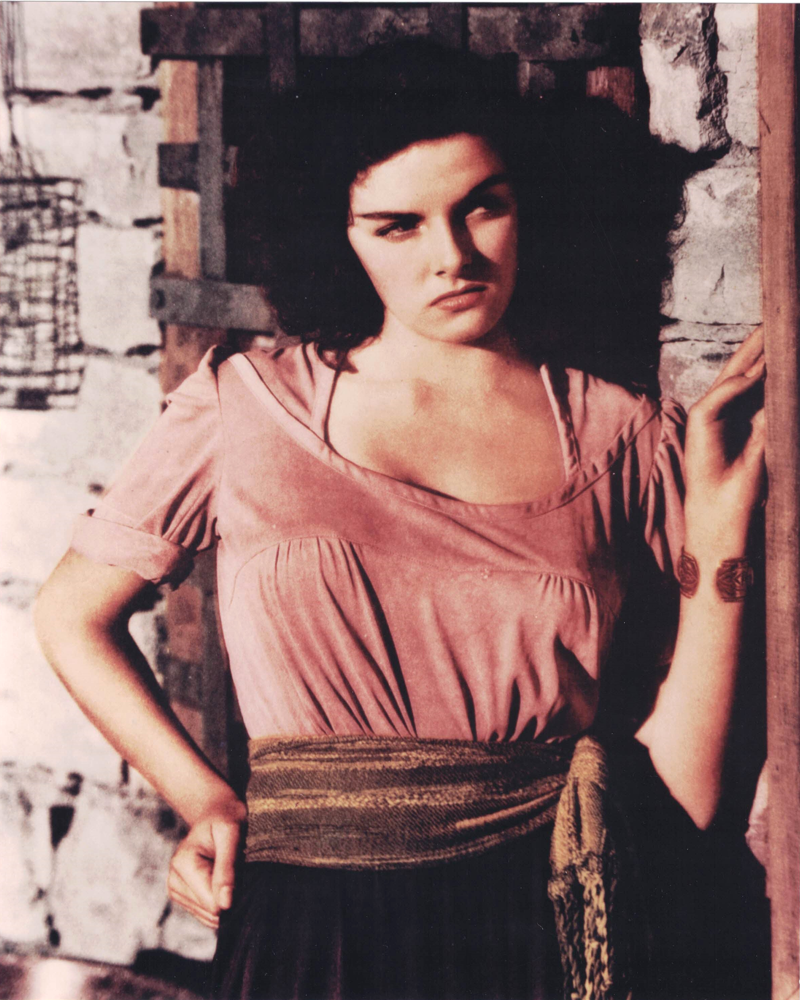

Product No. HEC-0092
$12.99
Shipping: $8.95
Description
8x10 color photograph
Full Description
Jane Russell (Deceased) was an American actress, singer, and Hollywood sex symbol who became one of the most recognizable stars of the 1940s and 1950s. Born Ernestine Jane Geraldine Russell on June 21, 1921, in Bemidji, Minnesota, she was discovered by producer Howard Hughes and quickly attracted attention for her beauty and strong screen presence. Russell made her film debut in "The Outlaw" (1943), a Western that became controversial because of its provocative advertising and the emphasis placed on her appearance. The publicity helped make her a major Hollywood star. She went on to appear in films including "His Kind of Woman," "Macao," "The Las Vegas Story," "Foxfire," and "The Tall Men." One of her most famous roles came opposite Marilyn Monroe in "Gentlemen Prefer Blondes" (1953), in which Russell played the confident and witty Dorothy Shaw. The film became a classic musical comedy and remains one of the best-known movies of both actresses. Russell also had a successful singing career and performed in nightclubs and on television. Her deep, distinctive voice complemented her glamorous screen image and helped her remain a popular entertainer for decades. Jane Russell died on February 28, 2011, at age 89. Her association with "The Outlaw," "Gentlemen Prefer Blondes," and classic Hollywood glamour continues to make her photographs, autographs, and movie memorabilia popular with collectors.
Condition
Excellent condition